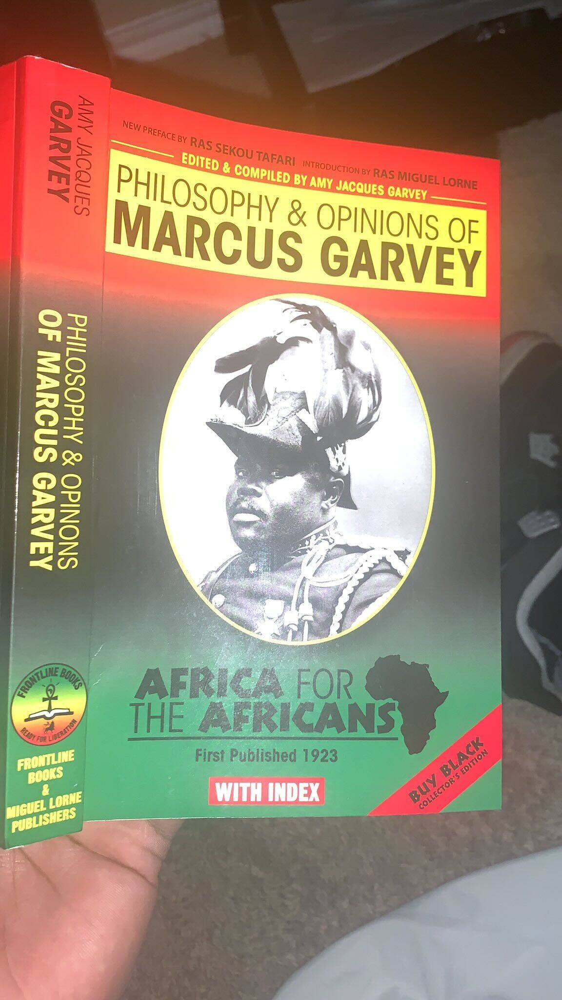

Hiking
Heat StrokesI enjoy walking to give me a stable mindset, to get a clear head or for cardio. I walk with my mom and brother regularly through mountains preferebly in cedar hill park or euless park.

Python Programming
I enjoy walking to give me a stable mindset, to get a clear head or for cardio. I walk with my mom and brother regularly through mountains preferebly in cedar hill park or euless park.
I think reading is fundamental and something I think all humans should create as a hobby. Knowledge is something no individual can take from you, which makes it one of the most powerful things on this earth if not the most powerful thing of all.
I've always loved football I started playing when I was 9 years old , I must say it was one amazing experience playing in all weathers and nearly all positions. I've played running back, linebacker, corner (1st String), defensive end, wide reciever and quarterback. I threw for 40 yards in the 5th grade and was only person to do that consistently. I've been first string all my life from 3rd or 4th grade to 10th grade, playing in three different states.

Info
I've lived in Kansas City, Arkansas and Texas.I've been a resident in Texas for almost 8 years now , I love how it's so many sights to see and there is plenty of things to do I'm orginally from Pine,Bluff Arkansas I grew up in arkansas for 8 years , 3 years being a child and the other 5 years ranging from 11 to 16 years old.